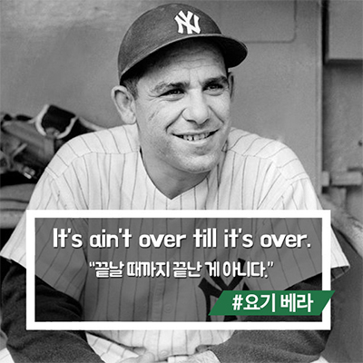
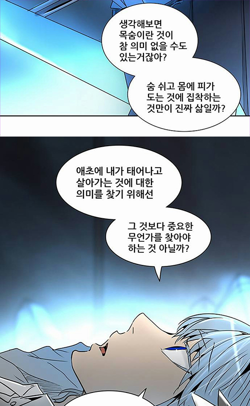

on
Bad Ball Hitter, 그리고 용기 있는 삶

매 순간을 기회로 만드는 배드볼히터
야구에 대해 큰 관심이 없다면 배드볼히터 라는 용어는 낯설겠지만, “끝날 때 까지 끝난 게 아니다” 라는 위의 명언은 익숙한 분들이 많으실 것이라 생각합니다.
이 명언은 전설적인 메이저리그 야구 선수인 ‘요기 베라’ 가 감독 시절, 자신이 이끄는 팀이 꼴찌일 때 비아냥 대는 기자를 향해 던진 말이였습니다. 그리고 그 해, 팀은 기적적으로 월드 시리즈(양대 리그 우승팀 간의 결승전) 에 진출했죠.
어쩌면 조금은 진부할 수도 있지만, 끝까지 최선을 다하겠다는 결연한 의지가 보이는 이 말을 남긴 요기 베라가!! 바로 대표적인 배드볼히터(Bad Ball Hitter) 중 한명이였습니다.
배드볼히터란, 스트라이크 존 밖으로 온 공에 대해서도 적극적으로 스윙하는 타자를 말합니다. (보통은 삼진아웃을 당하지 않기 위해 스트라이크존 내에 들어온 공을 칩니다.)
스트라이크 존을 제법 벗어나는 공은 눈에 잘 띄기 때문에, 가만히 있어도 타자 입장에서는 손해가 없어 스윙을 하지 않는 것이 일반적입니다. 그럼에도 불구하고 타격 자세를 무너뜨려가며 거의 모든 코스의 공에 방망이를 맞추려고 시도하고, 그것을 안타로 연결시켜 점수를 올리는 선수들을 배드볼히터라고 부릅니다.
제가 평소에는 과묵한 편인데 스포츠 얘기만 나오면 말이 급격히 많아지고..설명맨이 되기 시작합니다..
뜬금없는 야구 얘기가 길었네요 ^^; 어쨌든,
끝날 때 까지 끝난 게 아니라는 말을 남긴 그가, 매 타석 최대한 많은 순간들을 팀의 승리에 기여할 수 있는 기회로 만드는 배드볼히터인 것이 제법 어울린다는 생각이 들었습니다.
현실은 그저 두렵기만 한 순간들..
굉장히 많은 우여곡절과 함께 20대를 맞이했습니다.
한 번 후회 없이 살아보자고, 하고 싶은 걸 다 해보자는 대담한 포부와 함께 학교에 입학했습니다. 현실은 과감함과는 다소 거리가 멀긴 했지만.. 그래도 대학생활 알차게 보냈느냐고 묻는다면 조심스럽게 그런 것 같다..라고 말할 수 있을 정도는 되는 것 같습니다.
뭐든지 부딪혀보며 성장하자는 일념 아래 지난한 경험과 배움이 있었고, 마지막 학기를 앞두고서는 늘 동경하던 회사가 저의 첫 직장이 되어 멋진 분들과 함께 일하는 행운도 함께했습니다.
감사하게도 다른 사람들에게 이 이야기를 하면 수고했네. 많이 성장했겠구나. 라고 격려해줍니다.
하지만 첫 직장을 퇴사하고 난 후의 저는 세상에서 제일 가는 겁쟁이가 되어있었습니다.
3학년을 마칠 즈음 부터 조금씩 나빠지기 시작한 건강이 퇴사를 할 때 쯤엔 일상생활에 큰 지장을 줄 정도가 되었습니다.
알콜 냄새 가득한 종합병원 의자에 앉아 진료 차례를 기다리며 수도 없이 제가 걸어온 길을 후회했습니다. 똑똑하지 못하고 요령도 없는 스스로의 부족한 역량을 탓하기도 하고, 그 때 내가 왜 그런 일을 했을까 라고.. 한때는 의미 있다고 생각한 경험들이 순식간에 빛이 바래지는 안타까운 순간들의 연속이였습니다. 숱한 밤을 지새우며 고군분투하던 그간의 제 모습들이 그저 우습고 바보 같아 보였습니다.
‘이제는 적당히 내려놓고 아둥바둥 사는 거 그만하자.’
라는 마음과
‘나쁜 몸 상태를 나의 마음과 동일시 하지 말자.’
라는 마음 사이에서 많은 방황을 했습니다.
부정적인 생각에 지지 않기 위해 몸도 마음도 다시 건강해지고 싶었습니다. 한동안 놓고 있었던 운동도 다시 시작하고, 책을 읽었고, 개발자로 첫 직장생활을 하며 부족했던 부분을 채워나가는 공부도 했죠. 하지만 앞으로의 삶을 어떻게 살아가야할지에 대한 질문에는 여전히 대답하지 못하고 있었습니다.
이효리와 함께 했던 슈퍼 스타일리스트, 그녀에게 욕심이란?
저만의 답을 찾기 위해 고민하던 어느 날, Sellev 에서 유명 스타일리스트 한혜연씨를 인터뷰 한 영상을 보았습니다.
이 분의 모든 말 한 마디 한 마디가 와닿았지만, 마지막 구절이 저를 다시 깨워주었습니다.
“행복의 원동력은 욕심”
욕심과 희망이 있어야 일에 만족도가 있는거에요.
욕심 부려야해요. 욕심은 정말 무덤에 가는 그 날 까지 가져갈거에요.
그게 저를 행복하게 만들어주는 것 같아요.
끊임없이 스스로의 부족한 모습을 직면해야 하는 것에 지쳐 무언가에 도전하는 것이 무서워진 제게 너무나도 필요했던 말이였습니다.
앞으로도 성장할 수 있는 일이라면 두려움 없이 마주하고 싶고, 더 잘하고 싶다는 욕심을 부릴 때 느낄 수 있는 행복한 성취감도 잃고 싶지 않았습니다.

(회사 대표님 SNS에서 본 웹툰 신의탑의 한 장면. 쿤 너 만화캐릭터가 이렇게 멋져도 되는고닝..?🙂)
그래요. 살아간다는 건 자신에게 있어 중요하고 의미 있는 무언가를 행하는 것입니다. 앞으로 더 큰 어려움을 만나더라도 지금은 더 도전하고 싶습니다.
“Good” Bad Ball Hitter가 되고 싶다.
흔히들 야구를 인생에 비유하기도 합니다.
겨우겨우 안타를 쳐 진루를 해도 후속타자의 병살타 때문에 루상에서 어이없게 죽기도 하고, 굉장한 투수를 만나 배트 한번 제대로 휘둘러 보지 못하고 맥없이 아웃을 당하기도 하고.. 나를 어떻게든 아웃시키기 위해 투수와 야수들의 수비가 무시무시해도 그 모든 것을 이겨내고 홈런을 때려내기도 합니다.
조금만 둘러봐도 절로 존경심이 드는 대단한 분들이 계시고, 살아가면서 마주하는 대부분의 도전은 스스로를 넘어서야하는 노력을 필요로 합니다. 그렇기에 더 성장하고 나아가기 위해서 가장 먼저 필요한 것은 기회가 왔을 때 부딪혀 보겠다는 ‘용기’이고, 이런 용기 있는 삶을 위해 필요한 것은 ‘준비’ 라고 생각합니다. 준비 된 배드볼히터, 좋은 배드볼히터가 되고 싶습니다.
배드볼히터와 같은 삶이 어떻게 보면..흔히 말하는 ‘괜히 사서 고생하는’ 느낌이 들 수도 있습니다.
하지만 ‘한 번 뿐인 인생’ 이라고들 하잖아요. 아직은 노력하고, 도전하고, 성장하고 싶습니다! :)